We are going to prepare the proof of Proposition  for general
for general  . Since we need
a
. Since we need
a  -analogue of [O2, Lemma 8.1], we have to investigate
the quantum symplectic exterior algebra.
We start with its definition
which can be found in many textbooks on
quantum groups (for instance [CP, chapter 7]).
It is defined as the quotient of the
tensor algebra
-analogue of [O2, Lemma 8.1], we have to investigate
the quantum symplectic exterior algebra.
We start with its definition
which can be found in many textbooks on
quantum groups (for instance [CP, chapter 7]).
It is defined as the quotient of the
tensor algebra
 by a certain ideal.
We denote it by
by a certain ideal.
We denote it by
 and write the symbol
and write the symbol
 for multiplication
in this algebra. Setting
for multiplication
in this algebra. Setting
for
 , we write down the defining relations holding in
, we write down the defining relations holding in
 according to [Ha2, (5.2)]:
according to [Ha2, (5.2)]:
where
and
 is assumed. Remenber that the
is assumed. Remenber that the  of
[Ha2] corresponds to the inverse of our
of
[Ha2] corresponds to the inverse of our  .
The third relation does not occur in [Ha2] and indeed we have
.
The third relation does not occur in [Ha2] and indeed we have
PROOF: We use induction on . The beginning
follows
directly from
by multiplication with .
For  we use (14) and the induction hypothesis to see that
we use (14) and the induction hypothesis to see that

Since
we obtain (15).

We set
In contrast to [O2, section 7] we take the usual
order  on
on
 here for technical reasons. A subset
ordered
in that way will be called an ordered subset in the sequel.
here for technical reasons. A subset
ordered
in that way will be called an ordered subset in the sequel.
PROOF: The fact that the set is a set
of  -linear generators of
-linear generators of
 follows directly from the relations.
Linear independence is shown
using the Diamond Lemma for Ring Theory (cf. [Ha1, p. 157]).
The technical details can be found in Appendix 18.1.
follows directly from the relations.
Linear independence is shown
using the Diamond Lemma for Ring Theory (cf. [Ha1, p. 157]).
The technical details can be found in Appendix 18.1.

 is a graded algebra since the relations are
homogeneous of degree two. A basis for the
is a graded algebra since the relations are
homogeneous of degree two. A basis for the  -th homogeneous summand
is given by the subset
of
-th homogeneous summand
is given by the subset
of
 corresponding to the
set
of subsets
having cardinality .
corresponding to the
set
of subsets
having cardinality .
PROOF: It is a matter of calculation to show that
PROOF: By the previous proposition we have to show that the kernel of
is an
subcomodul of
 .
Call this kernel 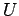 and let
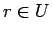. We must show
. Since
.
Call this kernel 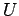 and let
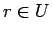. We must show
. Since  is a morphism of the
is a morphism of the  -comodule
-comodule
 we see
we see
If  is a bialgebra and
is a bialgebra and  an algebra which is a
an algebra which is a  -comodul we call
-comodul we call
 a
a  -comodul algebra if multiplication as well as the embedding of the unit
element are morphisms of comodules.
-comodul algebra if multiplication as well as the embedding of the unit
element are morphisms of comodules.
PROOF: The tensor algebra
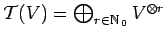
over  has a natural structure of an
has a natural structure of an
 -comolule algebra
(cf. [O1, 1.5]). Consequently by multiplicativity and the above proposition
the ideal generated by the kernel of
is an
-comolule algebra
(cf. [O1, 1.5]). Consequently by multiplicativity and the above proposition
the ideal generated by the kernel of
is an
 -comodule. But this is precisely the defining ideal
of
-comodule. But this is precisely the defining ideal
of
 by Proposition 11.3. Thus
by Proposition 11.3. Thus
 inherits
the comodul algebra structure from
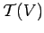.
inherits
the comodul algebra structure from
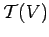.

Denote the comodule structure map of
 by
by
 .
.
where
and
 are the multi-indices corresponding to the
ordered subsets
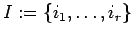 and
,
respectively.
are the multi-indices corresponding to the
ordered subsets
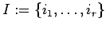 and
,
respectively.
Let us first treat the ingredients needed in the proof of that proposition.
PROOF: Since the
defining ideal of
 is generated by the kernel of
by Proposition 11.3
the assertion immediately follows
from Lemma 9.1.
is generated by the kernel of
by Proposition 11.3
the assertion immediately follows
from Lemma 9.1.

Let
be the
set of multi-indices corresponding to the ordered subsets
 .
.
PROOF: We use induction on  . The case
. The case  directly follows
from the formulas
directly follows
from the formulas
which are valid for
and  .
If 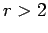, we embed
.
If 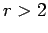, we embed
 as the subgroup of
as the subgroup of
 that
fixes the letter
that
fixes the letter  .
If
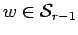, there is nothing to prove since
. Otherwise, we may write
where
.
If
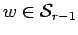, there is nothing to prove since
. Otherwise, we may write
where
 and
.
and
.
First consider the case where
is not contained in
.
Applying
to
 we only have to use (17) but not
(18). Consequently, we have
.
Here,
denotes the omission of . This element obviously
lies in , proving the assertion in the case
.
If is not the identity map we have
by the induction hypothesis since
.
we only have to use (17) but not
(18). Consequently, we have
.
Here,
denotes the omission of . This element obviously
lies in , proving the assertion in the case
.
If is not the identity map we have
by the induction hypothesis since
.
We next consider the case
.
This forces 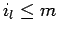 because . Let .
As above, we have
. Applying
to this expression, we have to use
(18) for the first time. But for each
basis element
 occurring as a summand in the resulting
expression we have
.
Similar things happen concerning the remaining
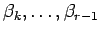. Thus, for each
occurring as a summand in the resulting
expression we have
.
Similar things happen concerning the remaining
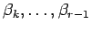. Thus, for each
 occurring
as a summand in
,
it follows
. On the other hand, for each such
summand there must exist an where . This is because
must contain a pair for some
occurring
as a summand in
,
it follows
. On the other hand, for each such
summand there must exist an where . This is because
must contain a pair for some
 , since this was the
case for the multi-index
, since this was the
case for the multi-index  we started with and
we started with and  either exchanges
the position of such a pair or replaces it by a sum where other such pairs
occur in each summand. Consequently,
we obtain
in this case too.
either exchanges
the position of such a pair or replaces it by a sum where other such pairs
occur in each summand. Consequently,
we obtain
in this case too.

Let the coefficient matrices of the  -module homomorphisms
and
-module homomorphisms
and  (from Lemma 11.7)
be given by
(from Lemma 11.7)
be given by
Now, if
corresponds to the
ordered set
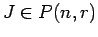
we have
 yielding
by Lemma 11.7. From Lemma
11.8 it follows
modulo . Thus, for a pair
of multi-indices corresponding to ordered sets
, we obtain
(Kronecker symbol). Finally, from
yielding
by Lemma 11.7. From Lemma
11.8 it follows
modulo . Thus, for a pair
of multi-indices corresponding to ordered sets
, we obtain
(Kronecker symbol). Finally, from
 we see for all
and
we see for all
and

We are now ready to give the proof of proposition 11.6. We calculate
But, this is exactly what we wanted
by
the definition
of bideterminants.
The formula we just have proved has some useful consequences
concerning the comultiplication and augmentation of
. These
are valid for any pair
 of multi-indices corresponding to ordered sets
and
follow directly with the help of the comodule axioms
and
:
of multi-indices corresponding to ordered sets
and
follow directly with the help of the comodule axioms
and
:
Another useful consequence is the following corollary:
PROOF: By Lemma 11.7 and the assumption we have